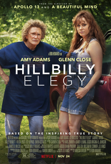
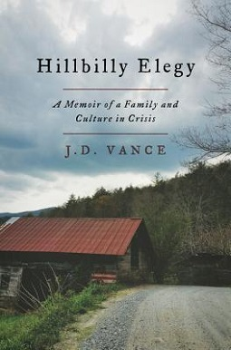

一本书如何让他从匿名 VC 变成"特朗普现象解读者"——以及他后来如何背叛了书中所描述的那个世界
2016年6月28日，就在唐纳德·特朗普锁定共和党总统提名仅仅十天后，一本264页的回忆录悄然上架。作者不是政治学家，不是新闻记者，不是民调分析师。他是一个31岁的风险投资人，在San Francisco和Cincinnati之间来回奔波，替彼得·蒂尔管着一个小型基金，此前唯一的公开身份是耶鲁法学院毕业生和伊拉克战争退伍军人。
书名叫 Hillbilly Elegy: A Memoir of a Family and Culture in Crisis——《乡下人的悲歌：一个家庭和一个文化危机的回忆录》。没有营销闪电战，没有电视专访，没有预购排行榜。HarperCollins 给了一个普通的出版档期。但到那年秋天，这本书成了全美最热门的政治读物——不是因为它是政治书，而是因为所有人都在问同一个问题：为什么铁锈带的白人工人阶级要把票投给特朗普？
一个没有政治经验的风投投资人，在硅谷的办公室里写下自己对家乡的回忆，几个月后却成了"理解特朗普现象的密钥"。这个巧合本身就是一个值得深挖的故事。但更值得深挖的是：这本书里写下的那个人，和后来站在特朗普身边的那个人，是同一个人吗？

故事的起点不在Middletown，不在耶鲁，而在New Haven的一间教授办公室里。
Amy Chua——那位因《虎妈战歌》而闻名全球的法学教授——不只是在学术上指导了 Vance。她是这本书的"教母"。Vance 自己称她为"authorial godmother"[注1]。Chua 做了一件关键的事：她把 Vance 介绍给了 HarperCollins 的编辑。
在出版之前，Vance 对自己的身份定位依然是一个"逃离了铁锈带的幸运儿"，而非政治评论员。他在耶鲁时和乌莎一起组织的那个讨论小组——主题是"白人美国的社会衰落"——是思想实验室，但还不是公众产品。Chua 的作用在于把私人的反思变成了公共的商品。
Peter Thiel 也在这个过程中扮演了微妙的角色。一张在 Reddit 上流传的图片（获得了超过4760个赞）展示了 Thiel 为这本书撰写的推荐语——一个硅谷亿万富翁为解释铁锈带贫困的书背书。Twitter 用户 @bill1st1 总结了这条权力链路："Peter Thiel 当年资助了 JD Vance，让他从《乡下人的悲歌》作者晋升到参议院再到白宫后，Thiel 的大数据公司 Palantir 被委托创建所有美国人的数据库。"[注2]
Vance 后来告诉编辑，他最初并不想写一本关于特朗普的书。他在2016年的一次播客采访中说："I told my editor, America's problem (Trump) would be the book's gain."（"我告诉我的编辑，美国的问题（Trump）将成为这本书的收获。"）[注3] 换言之，他清楚这本书的时机价值——但它的内核依然是一个家庭故事，而非政治分析。
然而，历史的齿轮并不以作者的本意为转移。
在阅读《乡下人的悲歌》时，最令人不安的部分不是关于药物成瘾或家庭暴力的章节，而是 Vance 对巴拉克·奥巴马的态度。
这段话的洞察力是惊人的。Vance 准确地捕捉了铁锈带白人对奥巴马的情感结构：不是种族仇恨（至少不完全是），而是一种更深层的东西——被一个"做对了所有事"的人映照出自身失败的羞耻感。
更令人惊讶的是，在2017年1月，奥巴马即将卸任时，Vance 在《New York Times》上写道："At a pivotal time in my life, Barack Obama gave me hope that a boy who grew up like me could still achieve the most important of my dreams."（"在我人生的关键时刻，巴拉克·奥巴马给了我希望——一个像我这样长大的男孩，仍然可以实现最重要的梦想。"）[注5]
同一个人，在同一年，说了以下这些话：
将这些言论与2024年Vance作为共和党副总统候选人的立场并置——赞扬特朗普、攻击移民、推动"美国优先"议程——产生的不是政治分歧的弧线，而是一种人格分裂。
MSNBC 的 Chris Hayes 在2021年的一条推文中点出了更深层的矛盾："Hillbilly Elegy - which I actually quite liked as a book - is deeply reactionary and basically makes the case that the people Vance grew up with are indolent and left behind for a reason."（"《乡下人的悲歌》——虽然我其实挺喜欢这本书——本质上是反动的，基本就是在说 Vance 长大时身边的人是懒惰的，被甩在后面是有原因的。"）[注10]
Hayes 的观察触及了这本书最根本的悖论：Vance 既是那个世界的产物，又是它的控诉者。他理解铁锈带的痛苦，但在理解的同时也完成了对它的审判。
但300万册的长期销量不能用政治事件来解释。它的成功来自一个更深层的原因：这本书同时满足了两个完全不同的读者群的需求。
对于自由派精英——那些在New York、Washington、Boston和San Francisco生活的人——这本书提供了一个"安全的"理解特朗普选民的窗口。它不是经济学分析，不是去工业化的数据报告。它是一个情感故事。你可以一边读一边流泪，一边觉得自己"理解了"那个你永远不会去的美国。
对于保守派——尤其是那些在沿海精英文化中感到被忽视的人——这本书讲述的是"自己的故事被讲述"。一个从铁锈带走出来的人，用精英的语言向世界说：我们不只是统计数据。
Bill Gates 在2017年的世界经济论坛上公开推荐了这本书[注13]。德国总理 Olaf Scholz 说这本书"让我流下了眼泪"[注14]。《New York Times》的 Jennifer Senior 称之为"a compassionate, discerning sociological analysis of the white underclass"[注15]。
但这种"被两边都接受"的特质恰恰暴露了这本书的局限性。当一本书同时被 Bill Gates 和 Donald Trump Jr. 推荐，被《New York Times》和 Breitbart 同时赞誉，它必然省略了一些令人不安的真相。它省略了结构性不平等的分析（因为那会让自由派不舒服），也省略了对保守主义政策的批评（因为那会让保守派不舒服）。留下的是一个精心修剪的花园：美丽、动人，但缺乏真正的野性。
而参议员 Ro Khanna 更是直接质问："What happened to you J.D. Vance—author of Hillbilly Elegy—now shrugging off Medicaid cuts that will close rural hospitals and kick millions off healthcare as 'minutiae?'"（"你到底怎么了，J.D. Vance——《乡下人的悲歌》的作者——现在竟然对将关闭乡村医院、让数百万人失去医疗服务的 Medicaid 削减满不在乎，称之为'细枝末节'？"）[注17] 这个帖子在 Reddit 上获得了超过6400个赞。
2020年11月24日，Netflix 上线了《乡下人的悲歌》的电影版。导演 Ron Howard，主演阵容包括 Amy Adams（饰演母亲贝弗利）、Glenn Close（饰演 Mamaw）和 Gabriel Basso（饰演成年 Vance）。Netflix 在2019年1月的拍卖中以4500万美元拿下了版权[注18]。
这部电影在口碑上遭遇了灾难性的失败。
但讽刺的是，Glenn Close 同时获得了奥斯卡最佳女配角提名——这种分裂性的评价本身就是一个隐喻。
批评者们的措辞毫不留情。A.V. Club 称之为"bootstrapping poverty porn"。 The Independent 称其"sickeningly irresponsible"。 Vox 的标题发人深省："Why does Hillbilly Elegy feel so inauthentic and performative?"[注19]
Ron Howard 本人后来也表达了不安。2024年9月，当 Vance 的政治言论变得越来越极端时，Howard 公开表示了"惊讶和失望"[注20]。
但一个更辛辣的反讽很快出现了。2025年2月，美国国防部在一场反 DEI 的清洗中，将 Vance 的《乡下人的悲歌》从军事图书馆和推荐书目中移除——理由是书中"提到了 LGBTQ 群体并赞颂了多样性"。Reddit 上 r/LeopardsAteMyFace 社区的一条帖子（8765赞）标题是："JD Vance's Book 'Hillbilly Elegy' deemed 'too woke' by Department of Defense."（"JD Vance 的《乡下人的悲歌》被国防部认定为'太觉醒了'。"）[注22]
这本书的作者成了自己政策的受害者。
Vance 在书中塑造的"乡下人"形象，在那些真正的乡下人看来，是一个被扭曲的镜像。
Forward Kentucky 发表了一篇题为 "In his tales of Appalachian life, JD Vance ignores people like me" 的文章。CNN 邀请了一位作者上节目，现场"拆穿"了这本书的论点，指出它"冒犯了该地区的许多人"[注23]。
Appalachia作家 Elizabeth Catte 在2018年出版了 What You Are Getting Wrong About Appalachia，直接回应《乡下人的悲歌》。一位 Reddit 用户引用了 Catte 的关键论断："Vance has transcended one of the most authentically Appalachian experiences of them all: watching someone with tired ideas about race and culture get famous by selling cheap stereotypes about the region."（"Vance 完成了所有阿巴拉契亚经验中最具代表性的一种：看着一个拿着关于种族和文化的陈旧观念的人，靠兜售关于这个地区的廉价刻板印象而出名。"）[注24]
Catte 还写了一句更为深刻的话："People in power use and recycle these strategies not because it's enjoyable to read lurid tales of a pathological 'other'—although that certainly informs part of the allure—but because they are profitable."（"当权者使用并循环这些策略，不是因为阅读关于病态的'他者'的耸人听闻的故事令人愉快——虽然这确实是部分吸引力所在——而是因为它们有利可图。"）[注25]
这正是《乡下人的悲歌》最深刻的悖论：它声称讲述的是Appalachia人的故事，但真正的受益者不是Appalachia人，而是讲述者自己。300万册的销量、Netflix 的4500万美元版权、800万美元的续集预付款[注26]——这些数字不会流向Jackson County或Middletown。
Alec MacGillis 在2024年7月的一条推文中纠正了一个常见的误解："Something irksome about 'Hillbilly Elegy' discourse is the frequent misapprehension that it's about Vance growing up in 'Appalachia.' As the book makes clear, it's about his growing up in the steel town of Middletown OH with family that migrated from Eastern KY."（"关于《乡下人的悲歌》的讨论中，令人恼火的一点是经常有人误解它是关于 Vance 在'阿巴拉契亚'长大的。正如书中所说，它是关于他在Ohio钢铁小镇Middletown的成长经历，他的家人是从Kentucky东部迁来的。"）[注28] 这种地理上的不准确——把一个Ohio钢铁小镇的故事包装成"Appalachia叙事"——本身就是该书被工具化的证据。
2026年3月，Kentucky州长 Andy Beshear 更是直接前往Middletown，在那里指责 Vance 犯下了"hillbilly hate"和"poverty tourism"[注29]。
《乡下人的悲歌》的核心论点是：铁锈带的贫困首先是一个文化问题，而非结构问题。 Vance 写道，Appalachia的文化"increasingly encourages social decay instead of counteracting it"[注30]。他描述了一个"Too many young men"对努力工作"immune"的社区，一个充满"willingness to blame everyone but yourself"的文化。
他在书中写道："I view members of elite with an almost primal scorn"（"我以一种近乎原始的蔑视看待精英阶层"）[注31]。他在书中赞扬了 payday loans，认为它们为没有银行账户的穷人提供了必要的金融服务[注32]。他批评了社会福利系统对个人责任的侵蚀。
然后他成为了精英的一部分，并投票削减了书中所描述的那些人的医疗保障。
这就是《乡下人的悲歌》作为政治工具的最讽刺之处。Vance 后来作为参议员和副总统支持的每一项政策——削减 Medicaid、放松对发薪日贷款的监管、反对扩大医保覆盖——都直接伤害了他在书中声称关爱的那个群体。
— Mitt Romney
这本书里的人不是工具。但 Vance 把他们变成了工具。
当他在书中写下 Mamaw 的故事时，他写下的是一个真实的、有血有肉的、在困难中做出选择的女性。但当他在2024年的竞选演讲中引用 Mamaw 时，她变成了一个政治符号——一个用来证明"我理解你们"的道具。他在书中对奥巴马的复杂情感被简化成了一条政治立场。他对"习得性无助"的心理学分析被简化成了一句口号："他们需要自己站起来"（但不要指望政府帮忙）。
《乡下人的悲歌》的成功不是因为它准确，而是因为它给精英阶层提供了一个"安全的"理解特朗普的方式。
传统的经济分析——去工业化、贸易自由化、工会衰落、阿片危机——会引向一个令人不安的结论：精英阶层的政策选择在某种程度上造成了铁锈带的痛苦。如果贫困是一个结构问题，那么解决方案就涉及重新分配资源、限制企业权力、改革贸易政策——这些都是精英阶层不愿面对的。
但 Vance 提供了一个更舒适的替代方案：贫困是一个文化问题。 铁锈带的痛苦源于"习得性无助"，源于"对努力工作免疫"，源于家庭的解体。解决方案不是政策改革，而是文化复兴——个人需要"站起来"，像 Mamaw 那样，像 Vance 自己那样。
这个叙事对硅谷投资人来说简直是完美的。 它意味着：你不需要反思你的公司如何摧毁了中部地区的就业；你不需要支持更高的税收或更强大的社会保障网；你只需要赞助一个"从铁锈带走出来的人"，让他告诉你"个人努力可以战胜一切"。
这正是 Peter Thiel 看中 Vance 的原因——不是因为 Vance 真的理解铁锈带，而是因为 Vance 提供了一个让硅谷感到舒适的铁锈带叙事。一个不要求结构性改革、不要求财富再分配、只要求"文化转变"的叙事。
当 Vance 从这本书的作者变成 Thiel 的门徒，再变成参议员，最后变成副总统时，他完成的不是一个政治人物的成长，而是一个叙事的物化：铁锈带的痛苦被转化成了一个可以消费的文化产品，然后被转化成了一个可以投资的政治资产。
《乡下人的悲歌》的续集——那本2017年以800万美元预付款签下的书——截至2026年仍未出版[注35]。也许这是因为，任何诚实的续集都不得不回答一个无法回避的问题：书中的那个人，后来去了哪里？
2025年11月，Ohio一所监狱发生了一则令人哭笑不得的新闻：有人将毒品浸泡在《乡下人的悲歌》的书页中，伪装成 Amazon 的包裹寄入监狱[注36]。这个事件的象征意义几乎是文学性的——一本声称描述Appalachia药物成瘾危机的书，本身成为了走私毒品的载体。
但更大的象征意义在于这本书的命运本身。Vance 写这本书时，他是一个 Never Trump 的保守派，一个对铁锈带怀有复杂情感的旁观者，一个相信"文化问题需要文化解决方案"的思考者。八年之后，他是特朗普最忠诚的副手，一个投票削减自己家乡医疗保障的参议员，一个将铁锈带的故事转化为政治资本的操盘手。
这本书是一个人最后的诚实时刻。 在进入政治的泥潭之前，在成为 Thiel 的棋子之前，在接受特朗普的提名之前，Vance 写下了他对家乡的真实感受——复杂的、矛盾的、既有爱又有恨的。那些文字里有一种后来他在公开演讲中再也没展示过的东西：脆弱性。
但脆弱性在政治中没有市场。所以他把那本书包装成了一个品牌，把那个品牌卖给了最高的出价者。